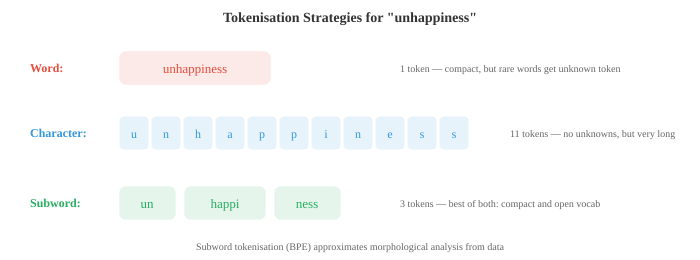

文本处理与经典 NLP¶
一句话总结：从字符规范化、分词、词干还原，到词性标注、命名实体识别、句法分析，再到 TF-IDF 与 n-gram 语言模型 —— 这条深度学习之前的经典自然语言处理流水线仍在支撑现代系统。
文本处理把原始字符转换成模型可以消化的结构化表示。本文覆盖各种分词方法、文本规范化、编辑距离、经典向量表示、语言模型、词性标注、命名实体识别与情感分析 —— 这条经典自然语言处理 (Natural Language Processing, NLP) 流水线至今仍在支撑着现代系统。
-
原始文本乱糟糟的。任何 NLP 模型要处理语言之前，文本都得先清洗、规范化、再转成结构化表示。本文覆盖从原始字符到模型可用特征的整条流水线，以及深度学习之前一度统治业界的经典 NLP 算法。
-
文本规范化 (text normalisation) 把原始文本转成一种规范形式。目标是压掉无关的变体，让 "Hello"、"hello"、"HELLO" 和 "héllo" 得到恰当处理。
-
大小写折叠 (case folding) 把文本转成小写。这就把 "The" 和 "the" 折成同一个 token。大多数任务里它都有帮助，但有些场合它会毁掉有用信息:"US" (国家) vs "us" (代词)，或者 "Apple" (公司) vs "apple" (水果)。
-
Unicode 规范化 (Unicode normalisation) 处理同一个字符可以有多种编码这件事。字符 "é" 可以是一个单独的码位 (U+00E9)，也可以是基础字母 "e" 加上一个组合重音符 (U+0065 + U+0301)。NFC (Normalization Form Canonical Composition，规范组合形式) 把它们合成一个码位,NFD (Normalization Form Canonical Decomposition，规范分解形式) 则把它们拆开。没做规范化的话，两个看起来一模一样的字符串可能匹配不上。
-
编辑距离 (edit distance) 衡量两个字符串差多远。莱文斯坦距离 (Levenshtein distance) 统计的是把一个字符串变成另一个所需的单字符插入、删除、替换的最少次数。"kitten" → "sitting" 的编辑距离是 3 (k→s、e→i、插入 g)。
-
编辑距离用动态规划 (algorithm 章里会复习) 来算。定义 \(D[i][j]\) 为字符串 \(s\) 前 \(i\) 个字符与字符串 \(t\) 前 \(j\) 个字符之间的距离:
-
编辑距离支撑起了拼写纠错、模糊匹配和 DNA 序列比对。在 NLP 里，它常用来处理拼写错误、找相似词。
-
分词 (tokenisation) 把文本切成模型能处理的离散单元 (token)。这是第一步，可以说也是最重要的预处理步骤。分词策略的选择会深刻影响模型行为。
-
空白分词 (whitespace tokenisation) 按空格切。简单但天真:"New York" 会变成两个 token,"don't" 是一个 token (或者被切成 "don" 和 "'t"，看用的是哪个切分器)，而中文、日文这类语言词与词之间根本没有空格。
-
基于规则的分词 (rule-based tokenisation) 用手写的模式 (正则表达式) 来处理缩略、标点和各种特殊情况。"I'm" → "I" + "'m","U.S.A." 保持一个 token。每种语言都得配自己的规则，人力成本很高。
-
子词分词 (subword tokenisation) 是现代方案。它不在词边界切，而是从数据里学一份高频子词单元的词表。这样能优雅地处理未登录词：如果 "unhappiness" 不在词表里，它可能被切成 "un" + "happi" + "ness"，还保留了词法结构。

-
字节对编码 (Byte-Pair Encoding, BPE) 一开始把每个字符当作词表里的单元。然后反复找出频率最高的相邻对，把它们合并成一个新 token。合并够多轮之后，常见词就成了单个 token，而稀有词则被切成高频子词片段。
-
BPE 算法:
- 用训练语料里所有单个字符初始化词表
- 统计每一对相邻 token 出现的频率
- 把出现最多的那一对合并成一个新 token
- 重复第 2-3 步，达到想要的合并次数 (也就是词表大小)
-
举个例子 (据 Sennrich et al. 2016 原论文的经典四词语料)，起始是 "l o w" (出现 5 次)、"l o w e r" (出现 2 次)、"n e w e s t" (出现 6 次)、"w i d e s t" (出现 3 次)：这时相邻对频率是 (l,o)=7、(o,w)=7、(w,e)=8、(e,s)=9、(s,t)=9、(n,e)=6 等 —— 频率最高的对是 "e s" (出现 9 次：6+3) → 合成 "es"。合并之后,"n e w es t" 与 "w i d es t" 里 "es t" 的联合频率变成 9 → 再合并成 "est"。继续合并下去，像 "n e w est" 中的 (n,e)、(ne,w) 也会依次被合成，最终词表里既有完整词 (如 "newest"、"widest")，也有子词片段 (如 "est"、"lo")。
-
WordPiece 是 BERT (Bidirectional Encoder Representations from Transformers) 使用的分词方法，跟 BPE 类似，但它挑合并对的标准不是原始频率，而是一个类似点互信息 (Pointwise Mutual Information, PMI) 的打分 —— 每次合并让训练数据的语言模型似然增益最大化的那一对。据 Schuster & Nakajima 2012 (原始 WordPiece 论文) 与 Devlin et al. 2018 (BERT) 的表述，合并候选 pair \((A, B)\) 的得分近似为 \(\dfrac{\text{freq}(AB)}{\text{freq}(A)\cdot\text{freq}(B)}\)，也就是把"这一对一起出现的频率"除以"两个子词各自出现的频率之积"。这样能优先合并统计上真正强关联的对，而不是像 BPE 那样只看绝对共现次数。不是词首的子词 token 会带上 "##" 前缀 (例如 "playing" → "play" + "##ing")。
-
Unigram (被 SentencePiece 使用) 走的是反方向：先从一个大词表开始，再迭代地移除那些"删掉之后训练数据似然掉得最少"的 token。最后剩下的词表就是最能解释语料的子词集合。
-
SentencePiece 是一个语言无关的分词库，它把输入当成原始字节流处理 (不做基于空格的预切分)。这让它能用在任何语言上，包括那些没有空格分隔的语言。它同时实现了 BPE 和 Unigram 两种算法。
-
词表大小是个关键的超参数。常见取值在 30,000 到 100,000 个 token 之间。词表更大 → 每条序列 token 更少 (更省)，但 embedding 表更大。词表更小 → 子词切分更多、序列更长。
-
这两种技术都把词还原到某种基础形式，但思路不同。
-
词干提取 (stemming) 用粗糙的规则砍掉后缀。Porter stemmer 把 "running" 变成 "run"、"happiness" 变成 "happi"、"studies" 变成 "studi"。它快但不精:"university" 和 "universe" 都会被 stem 成 "univers"，尽管两者八竿子打不着。
-
词形还原 (lemmatisation) 用词表和词法分析找出真正的字典形式 (词元，lemma)。"Running" → "run"、"better" → "good"、"mice" → "mouse"。它需要知道词性:"saw" 作动词还原成 "see"，作名词则保持 "saw"。
-
在神经 NLP 里，现代子词分词已经在很大程度上替代了 stemming 和 lemmatisation，但在信息检索、以及处理小模型或者数据受限的场景下，它们仍然有用。
-
词性标注 (Part-of-Speech, POS) 给每个词赋一个语法类别：名词、动词、形容词、限定词等等。这是最古老的 NLP 任务之一，也是句法分析的基石。
-
Penn Treebank tagset 是英语最常用的一套，总共 36 个标签 (NN 表示单数名词、NNS 复数名词、VB 动词原形、VBD 过去式、JJ 形容词等等)。
-
POS 标注的难点在于很多词有歧义。"Book" 可以是名词 ("the book")，也可以是动词 ("book a flight")。"Run" 跨词性有几十种义项。上下文是关键。
-
早期的标注器用第 05 章介绍过的隐马尔可夫模型 (Hidden Markov Model, HMM)。隐藏状态是 POS 标签，观测是词。转移概率刻画标签序列 (限定词后面很可能跟名词或形容词)，发射概率则刻画哪些词跟哪些标签共现。用 Viterbi 算法找出最可能的标签序列。
-
POS 标注的 HMM 模型:
-
现代 POS 标注器用神经网络 —— 双向长短期记忆网络 (Long Short-Term Memory, LSTM) 或者 Transformer —— 在英文上准确率能超过 97%，接近人类水平。
-
命名实体识别 (Named Entity Recognition, NER) 在文本中识别并分类专有名词与其它特定实体：人名、组织、地点、日期、金额等等。
-
在 "Apple CEO Tim Cook announced the event in Cupertino on Monday" 这句话里,NER 系统应该识别出:Apple (ORG)、Tim Cook (PER)、Cupertino (LOC)、Monday (DATE)。
-
NER 通常被建模成一个序列标注 (sequence labelling) 问题，使用 BIO 标注 (BIO tagging) (也叫 IOB tagging)。每个 token 得到一个标签:
- B-TYPE：类型为 TYPE 的实体的开始
- I-TYPE：类型为 TYPE 的实体的内部 (延续)
- O：不属于任何实体
-
"Tim Cook visited New York" 就变成:Tim/B-PER Cook/I-PER visited/O New/B-LOC York/I-LOC。B 标签标出新实体从哪儿开始 —— 当两个同类型实体紧挨着的时候，这一点很关键。

- 经典 NER 用第 05 章介绍过的条件随机场 (Conditional Random Field, CRF)，它建模的是"给定输入之后，整个标签序列"的条件概率。跟 HMM 是生成式 (\(P(x, y)\)) 不同,CRF 是判别式的，直接建模 \(P(y \mid x)\)。线性链 CRF 定义为:
-
这里 \(f_k\) 是发射特征 (emission features) (给定位置 \(i\) 的输入，标签 \(y_i\) 的可能性有多大),\(g_j\) 是转移特征 (transition features) (给定前一个标签 \(y_{i-1}\)，当前标签 \(y_i\) 的可能性有多大)。
-
配分函数 \(Z(x) = \sum_{y'} \exp(\ldots)\) 对所有可能的标签序列求和，把分布归一化。训练时最大化条件对数似然，这需要用前向算法 (第 05 章) 高效地算 \(Z(x)\)。
-
相比对每个 token 独立分类,CRF 的关键优势是转移特征能施加结构性约束 (例如 I-PER 只能跟在 B-PER 或 I-PER 后面，绝不能出现在 O 后面)。
-
现代 NER 会在一个神经编码器上面叠一层 CRF (BiLSTM-CRF 或者 BERT-CRF)，神经网络负责产生发射分数,CRF 层学习转移结构。
-
句法分析 (syntactic parsing) 把一句话转成它的句法结构 —— 要么是成分句法树，要么是依存句法树 (两种都在文件 01 里出现过)。
-
CYK 算法 (Cocke-Younger-Kasami) 用动态规划来做上下文无关文法的句法分析。
-
它要求文法必须是 Chomsky 范式 (Chomsky Normal Form) (每条规则右侧要么是两个非终结符，要么是一个终结符)。它从下往上填一个三角形表格：每个单元代表句子的一个片段，单元里存着能生成这个片段的所有非终结符。
-
CYK 的时间复杂度是 \(O(n^3 \cdot |G|)\)，其中 \(n\) 是句子长度,\(|G|\) 是文法大小。这是精确的，但对大文法来说太慢。
-
移进-规约句法分析 (shift-reduce parsing) 从左到右扫过句子，维护一个栈。每一步要么移进 (shift) (把下一个词压进栈)，要么规约 (reduce) (从栈顶弹出若干元素，替换成一个短语)。由一个训练好的分类器决定每一步的动作。它的复杂度是 \(O(n)\)，比 CYK 快得多。
-
依存句法分析 (dependency parsing) 如今在实践中比成分句法分析更常见。基于转移的依存句法分析器 (类似 shift-reduce) 和基于图的句法分析器 (给所有可能的边打分再找最大生成树) 是两条主流路线。用 BiLSTM 或者 Transformer 的神经依存句法分析器达到了最先进的效果。
-
在嵌入 (embedding) 出现之前,NLP 用简单的计数方法把文档表示成向量。
-
词袋 (Bag-of-Words, BoW) 模型把文档表示成一个词计数向量，完全忽略词序。如果词表里有 \(V\) 个词，每篇文档就是 \(\mathbb{R}^V\) 中的一个向量 (回连第 01 章的向量空间)。词 \(w\) 那一维的值就是 \(w\) 在这篇文档里出现的次数。

-
BoW 简单，但在文档分类、垃圾邮件过滤这类任务上出奇地好用。它主要的弱点是把每个词都当作同等重要:"the" 和 "revolutionary" 权重一样。
-
词频-逆文档频率 (Term Frequency-Inverse Document Frequency, TF-IDF) 修正了这个问题，它根据词的信息量来加权。那些在某篇文档里频繁出现、但在整个语料里很少见的词，对这篇文档来说很可能就是关键词。
-
词频 (term frequency) \(\text{TF}(t, d)\) 通常就是词 \(t\) 在文档 \(d\) 里的原始计数 (或者它的对数:\(1 + \log(\text{count})\))。
-
逆文档频率 (inverse document frequency) \(\text{IDF}(t) = \log\frac{N}{|\{d : t \in d\}|}\)，其中 \(N\) 是文档总数。像 "the" 这样每篇文档都出现的词,IDF 接近 0。稀有词的 IDF 很高。
-
TF-IDF 向量可以用余弦相似度 (第 01 章) 来比较，以此衡量文档相似度。这就是经典信息检索和搜索引擎的地基。
-
语言模型 (language model) 给一段词序列赋一个概率。它回答的问题是：这句话有多可能？语言模型是机器翻译、语音识别、拼写纠错和文本生成的核心。
-
一句话 \(w_1, w_2, \ldots, w_n\) 的概率，按概率链式法则 (第 05 章) 来算:
-
这个式子精确，但不实用：你得为每一种可能的历史存一个概率。马尔可夫假设 (Markov assumption) (第 05 章) 把历史截断成最后 \(k-1\) 个词，就得到了 n-gram 模型 (其中 \(n = k\))。
-
二元 (bigram) 模型 (\(n = 2\)) 只以前一个词为条件:
- 三元 (trigram) 模型 (\(n = 3\)) 以前两个词为条件。n-gram 概率通过在语料上计数来估计:
- 困惑度 (perplexity) 衡量语言模型对测试集预测得有多好。它是测试集的逆概率，再按词数归一化:
-
困惑度越低，模型对测试数据越"不惊讶"，也就越好。一个在 10,000 词词表上给出均匀概率的模型，困惑度就是 10,000。一个像样的 bigram 模型大概能到 200 左右。现代神经语言模型能压到 20 以下。
-
注意困惑度就是交叉熵的指数化 (来自第 05 章的信息论)。训练时最小化交叉熵损失，就等价于直接最小化困惑度。
-
平滑 (smoothing) 处理零概率问题：如果某个 n-gram 在训练时从没出现过，模型给它的概率就是 0，这会让整句话的概率都变成 0。Laplace 平滑 (Laplace smoothing) (加一平滑) 给每个 n-gram 加上一个小的伪计数:
-
对大词表来说这招太激进 (它从见过的 n-gram 那里偷走太多概率)。Kneser-Ney 平滑 (Kneser-Ney smoothing) 是 n-gram 模型的黄金标准。它揉合了两个想法：绝对折扣和用于回退的延续概率。
-
首先,绝对折扣 (absolute discounting) 从每一个观察到的计数里减去一个固定的折扣 \(d\) (通常 \(d \approx 0.75\))，而不是加伪计数。省下来的概率质量再分给没见过的 n-gram。插值形式是:
- 其中 \(\lambda(w_{i-1})\) 是个归一化常数，把折扣下来的质量分配出去。真正的关键创新是延续概率 (continuation probability) \(P_{\text{cont}}(w_i)\)，它衡量的是 \(w_i\) 出现在多少个不同上下文中，而不是它整体出现了多少次:
-
分子数的是有多少个不同的词出现在 \(w_i\) 前面。像 "Francisco" 这种词只出现在很少的上下文里 (几乎永远跟在 "San" 后面)，所以就算 "San Francisco" 极其高频,"Francisco" 的延续概率也很低，不会在别的上下文里被误预测出来。
-
反过来，像 "the" 这类常见词出现在很多不同的词后面，延续概率就高。这抓住了一个直觉：在回退估计里，一个词的"多样性"比它的原始频率更重要。
-
N-gram 模型曾在数十年间是最先进的。它们快、可解释、无需训练 (只是计数)。但它们对付不了长距离依赖 ("The keys that I left on the table are missing" 需要模型知道主语 "keys" 是复数，而它离动词很远)。神经语言模型 —— 从循环神经网络 (Recurrent Neural Network, RNN) 开始，到 Transformer 达到顶峰 —— 正是为了解决这个局限。
编码任务 (用 CoLab 或 notebook)¶
-
用动态规划实现 Levenshtein 编辑距离。用一些词对测试，并用它做简单的拼写纠错。
import jax.numpy as jnp def edit_distance(s, t): """用 DP 计算 Levenshtein 编辑距离。""" m, n = len(s), len(t) D = [[0] * (n + 1) for _ in range(m + 1)] for i in range(m + 1): D[i][0] = i for j in range(n + 1): D[0][j] = j for i in range(1, m + 1): for j in range(1, n + 1): if s[i-1] == t[j-1]: D[i][j] = D[i-1][j-1] else: D[i][j] = 1 + min(D[i-1][j], D[i][j-1], D[i-1][j-1]) return D[m][n] # 测试 pairs = [("kitten", "sitting"), ("sunday", "saturday"), ("hello", "hallo")] for s, t in pairs: print(f"d('{s}', '{t}') = {edit_distance(s, t)}") # 简单拼写纠错 dictionary = ["the", "their", "there", "then", "than", "this", "that", "these", "those"] misspelled = "thier" corrections = sorted(dictionary, key=lambda w: edit_distance(misspelled, w)) print(f"\nClosest to '{misspelled}': {corrections[:3]}") -
从零实现 BPE 分词。从字符级 token 开始，迭代地合并出现最频繁的对。
from collections import Counter def get_pairs(corpus): """统计所有词中相邻 token 对的数量。""" pairs = Counter() for word, freq in corpus.items(): symbols = word.split() for i in range(len(symbols) - 1): pairs[(symbols[i], symbols[i+1])] += freq return pairs def merge_pair(pair, corpus): """在语料中合并该对的所有出现。""" new_corpus = {} bigram = ' '.join(pair) replacement = ''.join(pair) for word, freq in corpus.items(): new_word = word.replace(bigram, replacement) new_corpus[new_word] = freq return new_corpus # 带词频的训练语料 text = "low low low low low lower lower newest newest newest newest newest newest" word_freqs = Counter(text.split()) # 初始化:把每个词切成字符,再加上词末标记 corpus = {' '.join(word) + ' _': freq for word, freq in word_freqs.items()} print("Initial corpus:") for word, freq in corpus.items(): print(f" {word}: {freq}") # 跑 10 轮 BPE 合并 for i in range(10): pairs = get_pairs(corpus) if not pairs: break best_pair = max(pairs, key=pairs.get) corpus = merge_pair(best_pair, corpus) print(f"\nMerge {i+1}: {best_pair} (freq={pairs[best_pair]})") for word, freq in corpus.items(): print(f" {word}: {freq}") -
构建一个 bigram 语言模型，在一句测试句子上计算困惑度。试试 Laplace 平滑。
from collections import Counter, defaultdict import math # 训练语料 train = """the cat sat on the mat . the dog chased the cat . the cat ran from the dog . a dog sat on a mat .""".split() # 统计 bigram 与 unigram bigrams = Counter(zip(train[:-1], train[1:])) unigrams = Counter(train) vocab_size = len(set(train)) def bigram_prob(w2, w1, alpha=0): """P(w2 | w1),可选 Laplace 平滑。""" return (bigrams[(w1, w2)] + alpha) / (unigrams[w1] + alpha * vocab_size) # 计算困惑度 test = "the cat sat on a mat .".split() for alpha in [0, 1, 0.1]: log_prob = 0 for w1, w2 in zip(test[:-1], test[1:]): p = bigram_prob(w2, w1, alpha=alpha) if p > 0: log_prob += math.log(p) else: log_prob += float('-inf') ppl = math.exp(-log_prob / (len(test) - 1)) if log_prob > float('-inf') else float('inf') print(f"Smoothing α={alpha}: perplexity = {ppl:.2f}") -
从零实现 TF-IDF，并用余弦相似度找出与查询最相似的文档。
import jax.numpy as jnp import math from collections import Counter documents = [ "the cat sat on the mat", "the dog chased the cat around the park", "a mat was placed on the floor by the door", "the quick brown fox jumped over the lazy dog", ] # 构建词表 vocab = sorted(set(word for doc in documents for word in doc.split())) word_to_idx = {w: i for i, w in enumerate(vocab)} V = len(vocab) N = len(documents) # 计算 TF-IDF 矩阵 doc_freq = Counter() for doc in documents: for word in set(doc.split()): doc_freq[word] += 1 tfidf_matrix = jnp.zeros((N, V)) for i, doc in enumerate(documents): word_counts = Counter(doc.split()) for word, count in word_counts.items(): tf = 1 + math.log(count) idf = math.log(N / doc_freq[word]) j = word_to_idx[word] tfidf_matrix = tfidf_matrix.at[i, j].set(tf * idf) # 查询 query = "cat on the mat" query_vec = jnp.zeros(V) query_counts = Counter(query.split()) for word, count in query_counts.items(): if word in word_to_idx: tf = 1 + math.log(count) idf = math.log(N / doc_freq.get(word, 1)) query_vec = query_vec.at[word_to_idx[word]].set(tf * idf) # 余弦相似度 (来自第 01 章) def cosine_sim(a, b): return jnp.dot(a, b) / (jnp.linalg.norm(a) * jnp.linalg.norm(b) + 1e-8) print(f"Query: '{query}'\n") for i, doc in enumerate(documents): sim = cosine_sim(query_vec, tfidf_matrix[i]) print(f" Doc {i} (sim={sim:.3f}): '{doc}'")
📌 本节要点¶
- 文本规范化：大小写折叠 + NFC/NFD Unicode 归一，让形似字符串真正等价。
- 编辑距离：用动态规划算 Levenshtein 距离，支撑拼写纠错与模糊匹配。
- 分词层级：从空白分词到基于规则再到子词分词，子词是现代神经 NLP 的标配。
- 子词算法: BPE 按频率合并，WordPiece 按 PMI 式打分 (\(\text{freq}(AB)/[\text{freq}(A)\cdot\text{freq}(B)]\)) 合并，Unigram 反向剪枝，SentencePiece 语言无关。
- 词干与词形: Stemming 快但粗，Lemmatisation 精但需词性；神经 NLP 里两者已被子词分词取代。
- POS 标注：早期用 HMM + Viterbi 解码，现代神经模型英文准确率超过 97%。
- 命名实体识别：序列标注 + BIO 编码，经典用 CRF 建模转移结构，现代堆在 BiLSTM 或 BERT 之上。
- 句法分析: CYK 精确但 \(O(n^3)\), shift-reduce 线性时间，依存句法配神经编码器达到 SOTA。
- 向量表示：词袋忽略语序，TF-IDF 用逆文档频率抑制常见词，余弦相似度支撑经典信息检索。
- N-gram 语言模型：马尔可夫假设 + 计数估计，困惑度评价，Kneser-Ney 用延续概率替代原始频率作为平滑黄金标准。